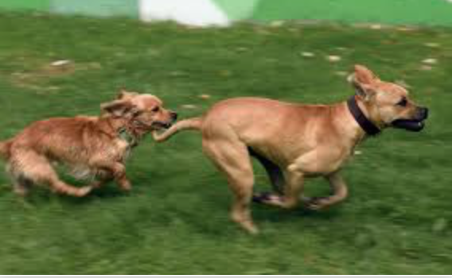
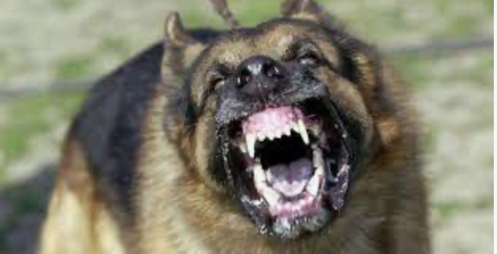

by Sarene Choudhury
Dogs are Scary
I have three reasons why I find dogs scary
- Their speed
- Their guarding ability
- Their bark

The first is that they can run faster than me, so if I'm being chased by one, chances are I'll be overtaken by it
The second is that they're often used as guard dogs, so they've been trained to attack people and thus are dangerous

Finally, the last reason is that they bark really loudly and aggressively
Here are some dog breeds that are most likely to bite:
- Chihuahas
- Bulldogs
- Pit Bulls
- German Shepherds
HOME
0
experiment with color
experiment with fonts